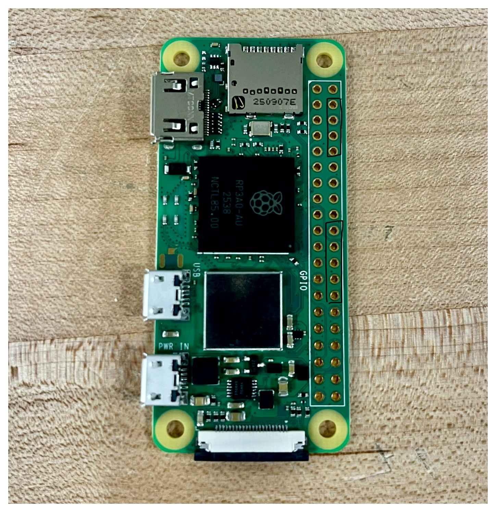

Task 1: Solder Raspberry Pi
Install the latch-style 4-pin header and the SIP switch on the Raspberry Pi Zero 2 W before anything is mounted to the airframe.
Day 1No blockers
Task 1: Solder Raspberry Pi
Install the latch-style 4-pin header and the SIP switch on the Raspberry Pi Zero 2 W before anything is mounted to the airframe.
Blockers
This task has no blockers. It can be started immediately.
None
Not marked complete

Use the boxed locations shown on the board. This is the version without a soldered 40-pin header.

Reference orientation for later installation. The front of the aircraft is toward the CSI camera connector end of the board.
Parts required
- Raspberry Pi Zero 2 W
- Connector, latch, 4-pin header
- Switch, SIP
- Solder
Tools required
- Soldering station
- Soldering iron
- Helping hands
- Ventilation fan
- Eye protection
Steps
- Turn on the ventilation fan and put on eye protection.
- Set the soldering iron to 740 °F.
- Insert the 4-pin latch header into the boxed location near the top of the Raspberry Pi. The connector body should face outward from the board edge so the matching harness can latch onto it later.
- Flip the board carefully and solder all four header pins. For each joint: touch the iron tip to the pad and pin together, feed a small amount of solder, then remove solder first and the iron second.
- Insert the SIP switch into the boxed location lower on the board. With the Raspberry Pi oriented as shown in the reference image, the switch marking should be readable from the solder-hole side, with the label oriented to the right.
- Solder all five switch pins. Avoid flooding adjacent pads with solder.
- Inspect every joint and reflow any joint that looks dull, cracked, or poorly wetted.
STOP! Ask for a faculty member to verify the solder joints, switch orientation, and 4-pin header orientation before the Raspberry Pi is mounted.
Common errors
- Not using eye protection or the ventilation fan.
- Applying too much solder and shorting adjacent pins or pads.
- Clamping the Raspberry Pi on top of components instead of at the board edges.
- Creating cold solder joints that look dull, lumpy, or only partially bonded to the pad.
- Holding the iron too long and lifting pads or overheating the board.